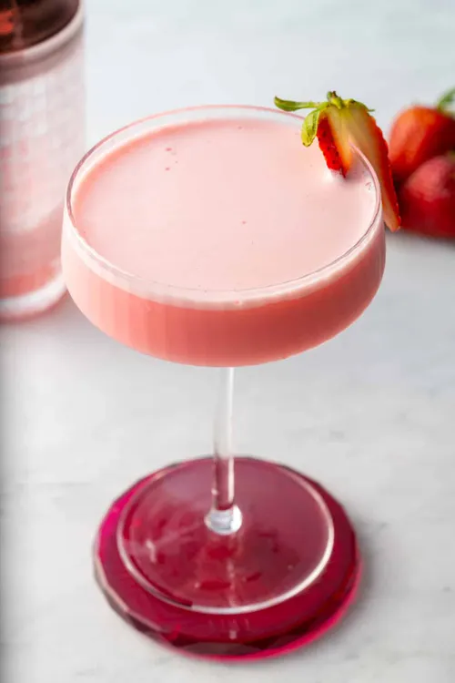

The term Pink Lady most commonly refers to a classic gin-based cocktail featuring gin, applejack, lemon juice, grenadine, and egg white, known for its pink color and frothy texture. It can also refer to the Pink Lady apple, a popular sweet-tart fruit variety bred in Australia in the 1970s from Golden Delicious and Lady Williams parents, marketed under a trademark. Additionally, Pink Lady was a famous Japanese female pop duo active in the late 1970s and early 1980s, consisting of Mie and Keiko.